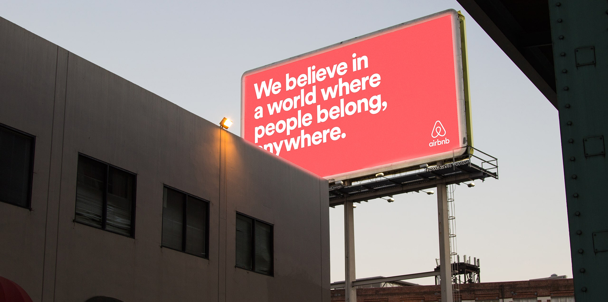

Airbnb feature design project
My Role:
UX researcher
UX designer
Team:
Student project created with Kayla Danio and Kateryna Kravchenko
Timeline:
4 weeks
Tools:
Figma
Overview:
The goal of this project was to design a fictitious new feature for an existing mobile application: Airbnb. to do this we had to do research about the application itself, it’s user interface and interaction patterns and its existing features as well as conducting research to determine who the intended and potential users are as well as their goals and the pain points they experience with using Airbnb, generating potential ideas before creating the final design for the new feature.
Final Outcome:
The fictitious feature we designed was Safestay: a safety and emergency support feature that would complement Airbnb’s support chat and ensure rapid responses for emergency situations, 24/7 direct support line addressing safety concerns, accommodation issues and guidance for emergencies, providing emergency relocation services and quick assistance.
Problem:
We identified 3 main concerns through user research that we could design a feature for, Safety, Transportation and issues of transparency between hosts and guests. Of these we determined that the most concerning were the safety issues. Some users reported having had urgent situations with their accommodations as well safety concerns that the Airbnb support chat was unable to address promptly and that lead to them loosing trust of the application.

Feature Summary
The Safestay feature was designed to address the safety concerns that we identified during our research. The Airbnb support chat, while helpful in many circumstances seemed insufficient to address emergency situations where time was a factor for the guests.The feature would categorize issues into three main areas: Safety Concerns, Accommodation Issues and Emergency Guidance. It would guide guests to local emergency services if needed as well as providing emergency relocation services for critical situations where the guest felt unsafe and unable to safely remain in the initial accomodation.
Emergency calling
The Safestay button is always visible onscreen, the interaction takes you through options of contact in order to resolve the issue as quickly as possible. the feature is also active 24/7.

Reporting an issue
Reporting an issue can be streamlined and personalized to cut through wait times on situations that require a degree of urgency, if emergency services are required the feature presents the local numbers and information, If the situation is not that kind of emergency the Airbnb team will deal with the situation in a few minutes.

For the Host
If the guest requires a relocation, they can move things faster by having the Host be able to address any concerns of their own and avoiding more severe consequences.


Research
We conducted secondary research into the design of the Airbnb app and the features it had already, as well as it’s competitors. Then we conducted interviews to find the pain points and the barriers faced by the people using the app. From these interviews we found 4 main concerns: Transportation, Trust, Safety, and Luxury Accommodation Issues.


Ideation